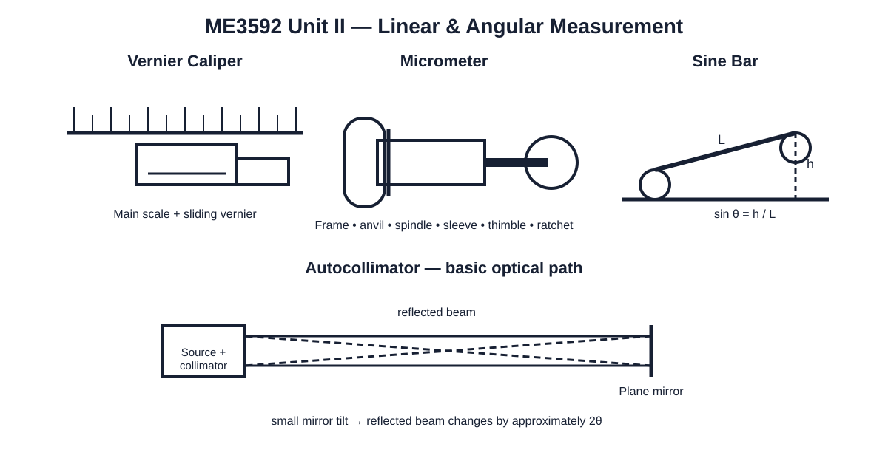
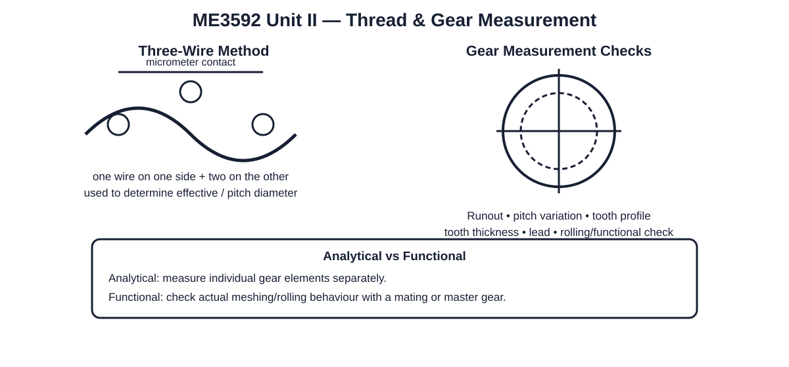

ME3592 — Unit II: Measurement of Linear, Angular Dimensions, Assembly and Transmission Elements
Exam approach: for an instrument, write principle → construction → working → reading/measurement method → applications → advantages and limitations. Draw a neat labelled sketch wherever the question asks for construction or working.
Scope: linear measuring instruments, gauge blocks, comparators, opto-mechanical measurements, angular measurement, screw-thread measurement and gear measurement.

1. Linear Measuring Instruments
1.1 Vernier Caliper
A vernier caliper is a direct-reading instrument for external dimensions, internal dimensions and depth measurements. It consists of a main scale and a sliding vernier scale.
Least count: LC = 1 main-scale division − 1 vernier-scale division.
Good practice: keep the work and measuring faces clean, avoid excessive jaw pressure and take the reading with the eye normal to the scale.
1.2 Micrometer
A micrometer uses a precision screw to convert rotary motion of the thimble into controlled axial movement of the spindle.
Main parts: frame, anvil, spindle, sleeve/barrel, thimble, ratchet and lock.
Measurement principle: spindle displacement per revolution is related to the screw pitch. The ratchet is used to obtain approximately uniform measuring force.
1.3 Vernier Height Gauge
Used with a surface plate to measure or mark vertical dimensions. A sliding carriage carries the vernier mechanism and a scriber or suitable attachment.
1.4 Depth Micrometer
Used for measuring the depth of holes, slots, recesses and steps. The base rests on the reference surface and the spindle enters the feature.
1.5 Bore Gauge
A bore gauge is normally a comparative instrument. It is set against a reference dimension and the indicator shows the deviation of the bore from the set value.
1.6 Telescoping Gauge
A telescoping gauge is a transfer instrument for internal dimensions. The contacts are expanded inside the bore, locked, removed and then measured with a micrometer.
2. Gauge Blocks / Slip Gauges
Gauge blocks are precision length standards used for setting and checking measuring instruments, comparators and angle-measuring arrangements such as a sine bar.
Wringing
Wringing means joining clean gauge-block faces by a controlled sliding motion followed by intimate contact. The faces must be clean and free from damage.
Selection of a combination
Start from the least significant required decimal place and select blocks so that the required dimension is obtained with as few blocks as practicable. Avoid unnecessary blocks because each additional contact increases handling and error opportunities.
Precautions
- Clean measuring faces before use.
- Do not slide blocks over dirty or damaged surfaces.
- Use suitable protective handling to avoid corrosion and fingerprints.
- Separate wrung blocks by sliding rather than twisting them apart.
- After use, clean and protect the blocks before storage.
3. Comparators
A comparator is primarily a comparison instrument. It indicates the deviation of a workpiece from a preset reference rather than normally displaying the absolute dimension directly.
3.1 Mechanical Comparator
Small displacement of the contact member is magnified mechanically by a lever, gear train or related mechanism and displayed by a pointer.
Advantages: simple, compact, robust and normally does not require an external power supply.
Limitations: friction, backlash and wear in moving elements can affect performance; measuring range is limited.
3.2 Electrical / Electronic Comparator
A transducer converts small displacement into an electrical signal. The signal is amplified and displayed.
Advantages: high magnification, small moving mass and convenient remote/electrical indication.
Limitations: requires electrical supply and performance can be affected by electrical and environmental conditions.
3.3 Pneumatic Comparator
Dimensional variation changes the air condition at a nozzle. The resulting pressure or flow change is converted into a comparative indication.
Comparator characteristics
| Characteristic | Meaning |
|---|---|
| Magnification | Ratio of indicated movement to actual input displacement. |
| Range | Maximum useful input displacement over which the comparator operates. |
| Sensitivity | Change in output indication for a given input change. |
| Repeatability | Ability to give consistent indications for repeated measurements under the same conditions. |
4. Opto-mechanical Measurement
4.1 Measuring Microscope
A measuring microscope combines optical magnification with calibrated stage or crosshair movement. It is useful for small dimensions, angles, profiles and thread-related features.
4.2 Profile Projector / Optical Projector
The workpiece silhouette is optically enlarged and projected onto a screen. Since the measurement can be made without direct contact, it is useful for delicate, small or complex profiles.
Typical applications: checking profiles, angles, radii, slots, small formed features and comparing the projected contour with a reference.
5. Angular Measuring Instruments
5.1 Bevel Protractor
A vernier bevel protractor is a direct-reading angular instrument consisting of a main circular scale, vernier, base and adjustable blade. It is suitable for general precision angular measurement.
5.2 Clinometer
A clinometer measures the inclination of a surface with respect to a reference direction. It is useful when a small slope or angular deviation has to be established.
5.3 Angle Gauges
Angle gauges are precision angular blocks. Individual blocks are combined by addition and subtraction to obtain the required angle.
5.4 Precision Level
A precision level is used for detecting very small angular deviations of machine-tool and reference surfaces.
5.5 Sine Bar
A sine bar uses the geometry of a right triangle. One roller rests on the reference surface and the other is raised using a slip-gauge stack.
Therefore, θ = sin⁻¹(h/L), where h is the slip-gauge height and L is the distance between roller centres.
Applications: precise angle measurement and accurate setting of a workpiece to a known angle.
Important errors: roller-centre distance error, slip-gauge error, lack of parallelism, surface flatness and contact/deformation effects.
Limitation: as the angle becomes large, the height required and the practical sensitivity to errors increase; therefore the sine-bar method is normally preferred for moderate angles.
5.6 Autocollimator
An autocollimator is an optical instrument for measuring very small angular differences or changes. A collimated beam is directed toward a plane reflector and the reflected image is observed through the optical system.
If the reflector is tilted through a small angle θ, the reflected beam changes direction by approximately 2θ.
Applications: straightness, flatness, squareness, alignment, angular indexing and small angular comparisons.
5.7 Angle Dekkor
An angle dekkor is an optical angular-comparison instrument used to measure small angular deviations from a known setting. It is particularly useful when a component is compared with an established angle.
5.8 Alignment Telescope
An alignment telescope establishes a reference line and is used to check alignment of machine-tool elements and other components over a distance.
6. Measurement of Screw Threads

6.1 Important thread elements
- Major diameter: diameter over the crests of an external thread.
- Minor diameter: diameter at the roots of an external thread.
- Pitch / effective diameter: diameter associated with the thread flank contact and fit.
- Pitch: axial distance between corresponding points on adjacent threads.
- Lead: axial advance in one revolution.
- Thread angle and form: describe the geometry of the thread profile.
6.2 Major diameter measurement
External major diameter may be measured using a suitable micrometer. For higher precision comparison, a controlled measuring arrangement and reference standard can be used.
6.3 Minor diameter measurement
External minor diameter may be measured using suitable V-type contacts or comparative arrangements. Internal thread minor diameter requires an appropriate internal measuring arrangement such as taper elements or rollers depending on the size and geometry.
6.4 Effective diameter — three-wire method
The three-wire method uses three equal, precision wires: two wires on one side of the thread and one on the opposite side. The wires contact the thread flanks and the measurement over the wires is obtained with a micrometer.
The method is valued because the contact arrangement gives a controlled way of evaluating the effective diameter.
Best-wire idea: the best wire diameter is selected so that the wire contacts the thread flank near the pitch line.
6.5 Pitch measurement
Pitch can be measured using a pitch-measuring machine, toolmaker's microscope or suitable thread-pitch gauge depending on the required accuracy and application.
7. Gear Measurement
Gear measurement is performed to verify dimensional and functional accuracy before the gear is accepted for service.
Important analytical checks
- Runout
- Pitch variation
- Tooth profile
- Tooth thickness
- Lead
Analytical vs functional checking
| Analytical measurement | Functional measurement |
|---|---|
| Individual gear elements are measured separately. | The gear is checked for actual meshing/rolling behaviour. |
| Helps locate the particular dimensional error. | Shows the combined functional effect of errors during operation. |
8. High-Value Exam Questions
- Explain the construction and working of a vernier caliper or micrometer.
- Explain gauge blocks and the process of wringing with precautions.
- Explain the principle, construction and working of a mechanical comparator.
- Compare mechanical, electrical/electronic and pneumatic comparators.
- Explain the principle and measurement procedure of a sine bar.
- Explain the construction and working of an autocollimator with applications.
- Explain the three-wire method of measuring effective diameter of a screw thread.
- Explain analytical and functional methods of gear measurement.
9. Numerical Methods to Practise
- Vernier least-count and reading problems.
- Micrometer reading and pitch/resolution problems.
- Slip-gauge combination problems.
- Sine-bar angle calculation: h = L sin θ.
- Thread effective-diameter problems using the three-wire method.
- Comparator magnification and deviation problems.
10. Final Exam Checklist
- For theory: principle → construction → working → applications → advantages/limitations.
- Draw and label the instrument before explaining its working.
- Remember sin θ = h/L for the sine bar.
- Remember that an autocollimator doubles the small mirror tilt in the reflected-beam direction.
- Know the thread elements and the three-wire arrangement.
- Differentiate analytical gear measurement from functional/rolling checking.